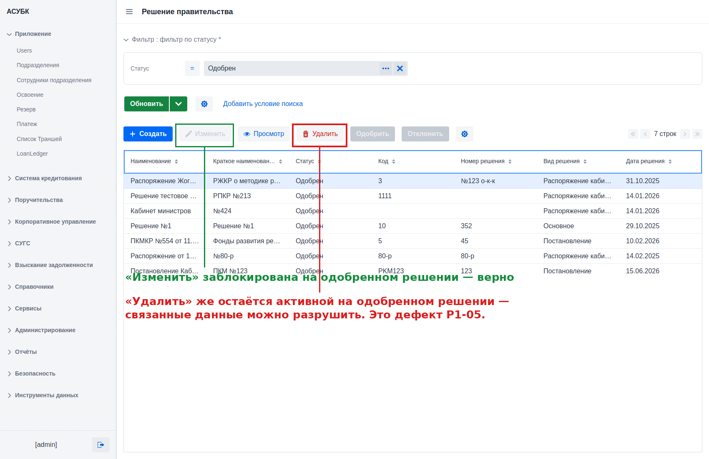
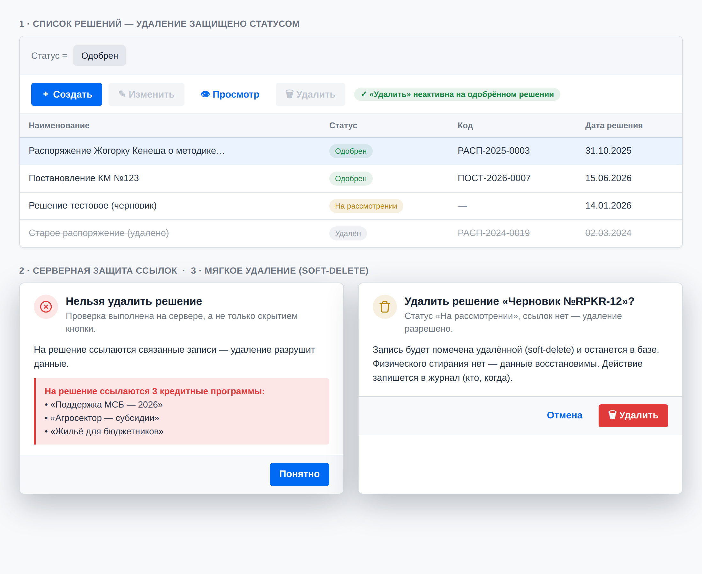

R4. Удаление решений: защита ссылок, статус, soft-delete
Запрет удаления используемых и одобренных решений; мягкое удаление с аудитом
🟠 Средний приоритетСвязан: дефект P1-05; R2 (журнал аудита); Фаза 2 (ссылки программ)
Документ для согласования · Версия 1.0 · 20.06.2026 · Тестовая среда https://fkftest.okmot.kg/
Содержание
Назначение задачи
Как сейчас (проблема)
Что предлагаем
Правила и поведение
Как это увидит пользователь
Критерии приёмки
Открытые вопросы
1. Назначение задачи
Решение правительства — это юридический акт, на основании которого
открывается кредитная программа. Удаление такого решения должно быть защищённой
операцией: нельзя стирать акт, на который опираются программы и иные
downstream-данные, и нельзя удалять одобренные/закрытые записи. Задача — закрыть
возможность разрушить связанные данные и перейти к мягкому удалению с аудитом.
2. Как сейчас (проблема)
Факт (дефект P1-05, проверено 2026-06-17). Кнопка «Удалить» остаётся
АКТИВНОЙ на одобренных и закрытых записях. При этом редактирование уже
корректно заблокировано («Изменить» неактивна на одобрённых/закрытых),
а удаление — нет. Серверная проверка ссылочной целостности на удаление
не тестировалась, чтобы не разрушить связанные данные.

Сейчас: на одобренной записи «Изменить» заблокирована (верно), но «Удалить» остаётся активной (P1-05). Проверено 2026-06-20.
3. Что предлагаем
Ввести серверную проверку ссылок + блокировку по статусу +
soft-delete вместо физического удаления. Удаление перестаёт быть
разрушающей операцией: связанные и одобренные решения защищены, а сам факт
удаления фиксируется в журнале аудита (R2).
4. Правила и поведение
Параметр
Правило
Проверка ссылок
Серверная проверка — запретить удаление, если на решение ссылается хотя бы одна кредитная программа (или иная downstream-сущность). Проверка на СЕРВЕРЕ, не только скрытием кнопки.
Сообщение
При попытке удалить используемое решение — внятное сообщение «Нельзя удалить: на решение ссылаются N программ», а не молчаливый отказ.
Блокировка по статусу
Для одобренных/закрытых записей удаление недоступно (кнопка неактивна) — выровнять с поведением редактирования.
Soft-delete
Вместо физического удаления запись помечается удалённой, остаётся в БД.
Аудит
Удаление пишется в журнал (см. R2) — кто, когда.
Downstream
Полный список ссылок на решение уточняется при реализации фаз 2+.
5. Как это увидит пользователь
1Выбрать решение
Пользователь выбирает решение в списке и открывает действия над записью.
2Блокировка по статусу
Для одобрённого/закрытого решения кнопка «Удалить»
неактивна (как «Изменить») — с подсказкой, почему действие недоступно.
3Защита ссылок
При удалении решения, на которое ссылаются программы, система
показывает «Нельзя удалить: на решение ссылаются N программ».
4Мягкое удаление
Успешно удалённая запись помечается удалённой (soft-delete),
остаётся в истории/журнале.
Важно. Физического стирания нет — данные восстановимы и прослеживаемы.

Как должно выглядеть: (1) на одобрённом решении «Удалить» неактивна; (2) серверная проверка ссылок — «Нельзя удалить: на решение ссылаются N программ»; (3) для записи без ссылок — мягкое удаление (soft-delete) с записью в журнал. Макет mockups/decision-delete.html.
6. Критерии приёмки
Кнопка «Удалить» неактивна для одобрённых/закрытых записей.
Серверная проверка блокирует удаление при наличии ссылающихся программ.
Пользователю показывается сообщение с числом ссылок N.
Удаление выполняется как soft-delete (запись остаётся в БД).
Удаление фиксируется в журнале аудита (R2).
7. Открытые вопросы
Полный перечень downstream-сущностей (помимо кредитных программ)?
Кто вправе видеть/восстанавливать soft-deleted записи?